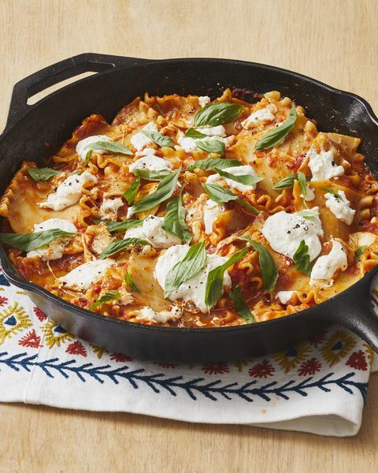

Skillet lasagna

This no bake skillet lasagna is made right on your stove top and is a fast and easy alternative to traditional lasagna.
Feeling lazy but still want to eat good?
This recipe will be sure to satisfy your hunger without you having to do much!
Ingredients
- pasta
- pasta sauce
- salt
- pepper
- water
Instructions
- Bring water to a boil
- Boil pasta for 7 minutes
- Drain pasta
- Add pasta sauce
- Add salt or pepper to taste
Back to Home